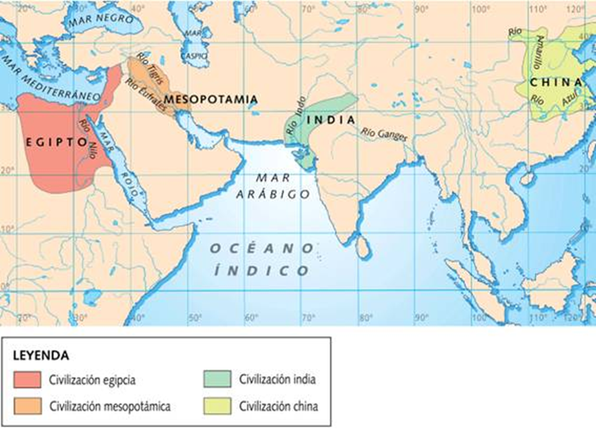

A partir del IV milenio a. C., en la zona del Oriente Próximo conocida como Creciente Fértil, surgieron las primeras grandes civilizaciones urbanas conocedoras de la escritura. En estas tierras regadas por los ríos Tigris y Éufrates en Mesopotamia, y Nilo en Egipto, el aumento de la producción agrícola estimuló el crecimiento de grandes ciudades y el desarrollo de la artesanía y el comercio. La sociedad se hizo más compleja y surgieron las primeras formas de Estado.
Las primeras civilizaciones: Mesopotamia y Egipto.
Las primeras civilizaciones.
Conocimiento previo
Antes de desarrollar la unidad, ¿qué sabes de las civilizaciones mesopotámicas y egipcias?
¿Por qué las primeras civilizaciones surgieron a orillas de grandes ríos?
Durante la Edad de los Metales aparecieron las primeras ciudades gobernadas por un rey. Estos reyes fueron ampliando sus territorios hasta que algunos lograron formar grandes imperios. Las primeras grandes civilizaciones (grandes áreas culturales con su propia concepción del mundo y con mismas señas de identidad -lengua, religión, costumbres, mentalidad...-) se desarrollaron hace unos 5.000 años y reciben el nombre de civilizaciones fluviales porque surgieron junto a grandes ríos:

Las primeras civilizaciones. (CC0)
Estas civilizaciones lograron el control de los ríos mediante obras de drenaje: diques de contención y esclusas para regular, canales de irrigación y acequias, cisternas para almacenar el agua… Este control de las aguas permitió aumentar la superficie de tierra cultivable, cuya consecuencia fue: el aumento de la producción agrícola, el aumento del comercio y el aumento de la población.
¿Por qué surgió la escritura?
El surgimiento de la escritura es uno de los hechos más trascendentes en la evolución de la humanidad. Los historiadores sitúan a partir de entonces el comienzo de la Historia y la finalización de la Prehistoria. La escritura apareció hace más de 5.000 años en:
- Mesopotamia, hacia el año 3300 a. C., conocida como escritura cuneiforme.
- Egipto, hacia el año 3150 a. C., conocida como escritura jeroglífica.
Pero, ¿por qué surgió la escritura? Debido al aumento de la superficie de tierra cultivable, de la producción agrícola y del comercio, los hombres de la antigüedad tuvieron que hacer:
- Anotaciones para controlar las actividades económicas: propiedad de la tierra, volumen de cosechas, comercio, impuestos
- Redactar órdenes y códigos (compilaciones de leyes), textos religiosos y literarios.


{kind=link}
{kind=link}
{kind=link}
{kind=link}
¿Qué características tenían las primeras civilizaciones?
Tenían cuatro rasgos comunes:
- Un poder político fuerte: concentrado en un rey que dictaba leyes, mandaba sobre los ejércitos y solía cumplir funciones religiosas. Era ayudado por funcionarios para administrar sus posesiones y un ejército para proteger el territorio.
- Una economía basada en la agricultura: las abundantes cosechas permitieron el desarrollo de otros oficios: alfareros, tejedores, orfebres, canteros…; así como el incremento de los intercambios comerciales.
- Una sociedad muy jerarquizada: la sociedad se organizaba en una minoría privilegiada propietaria de tierras, riquezas y cargos públicos, y una mayoría sometida, pues estaba obligada al pago de elevados impuestos.
- El desarrollo de la cultura y la ciencia, donde los reyes y emperadores potenciaron el arte con la construcción de grandes obras: grandes palacios, templos, tumbas, canales de agua…
Recuerda que las primeras civilizaciones surgen a partir del IV milenio a. C., en la zona del Oriente Próximo conocida como Creciente Fértil.
Obra publicada con Licencia Creative Commons Reconocimiento Compartir igual 4.0